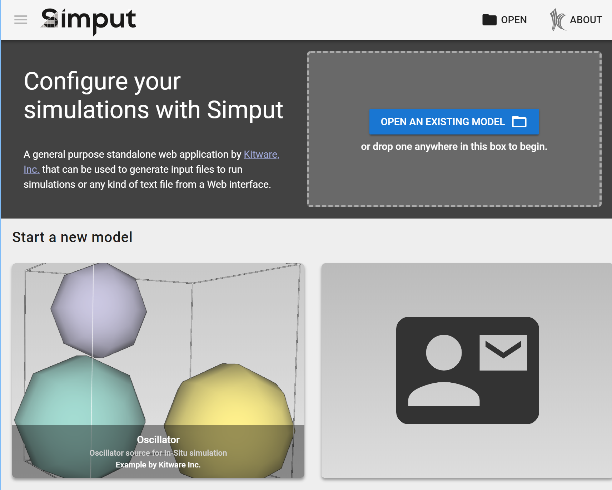
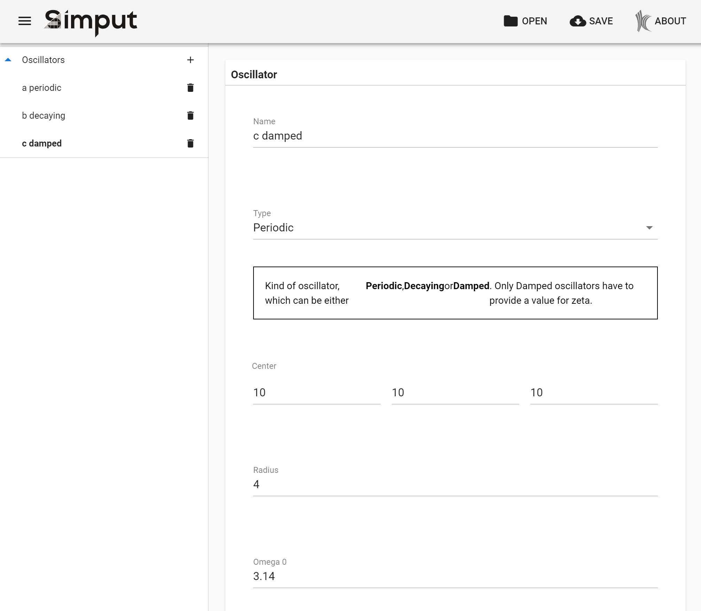
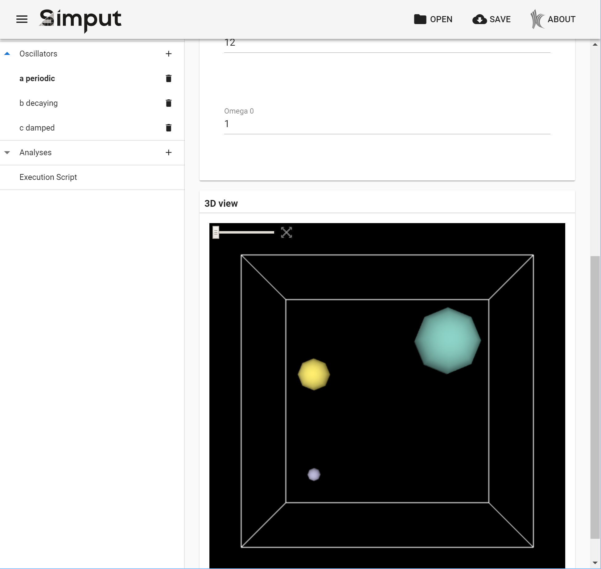

This example is more complete and complex than the simple vcard example. It includes three output files and the different views to support them. We will walk you through the model definition and its usage inside Simput.
What’s an Oscillator?
We are going to create input files for the oscillators miniapp, which is part of the Sensei project. It is designed to emulate the output of a simulation, without actually doing the complicated calculations typical of a simulation. It is used to test the performance of in-situ analysis code, which takes the raw output of a simulation and either visualizes it or performs analysis on it to summarize or compress the results.
The oscillator app takes as input a list of gaussian oscillators with a few parameters that tell their position, size, and how they vary over time. The contents of an input file might look like this:
# type center r omega0 zeta |
We will also create two other input files. The first is an xml specification of a list of analyses to perform on the simulation output. The second is a script file to run the oscillator in a multi-process context with the other two input files. We’ll get back to those other files later on.
Creation of the new type
Setup
First we need to create a directory for our files. After cloning simput and running npm install, create the directories types/oscillator/src, and the file types/oscillator/README.md to document our type.
Next we add a line to package.json to compile our type:"scripts": {
// ...
"type:oscillator": "node ./src/cli/simput-cli.js -c ./types/oscillator/src -o ./static/types -t oscillator",
}
Finally we add our type to the landing page. In static/index.html:// Register various template
Simput.registerType('demo', ['./types/demo.js']);
// add to list:
Simput.registerType('oscillator', ['./types/oscillator.js']);
and in src/samples/index.js:{
label: 'Oscillator',
image: Images.oscillator,
// icon: 'wb_sunny', // or start with an icon
description: 'Oscillator source for In-Situ simulation',
acknowledgement: 'Example by Kitware Inc.',
model: {
type: 'oscillator',
data: {},
},
},
We added an image in the images subdirectory, but an icon from vuetify can be used instead.
Model creation
Let’s create a View to contain our list of gaussian oscillators. The is specified as a json or javascript object, though we recommend javascript because it can contain comments. Our data model needs an entry for each of the gaussian’s parameters, and the variable-sized list to contain them. Create the file types/oscillator/src/model.js:
// model.js |
This model definition will be automatically displayed as a form for the user to fill out, with add and delete buttons for changing the list of oscillators.
These parameters illustrate some of the different types and options available. Parameter types can be double, int, string, enum, or bool. Parameters like center with a size greater than 1 can choose different layouts. The zeta parameter doesn’t have a default value, so it is only defined if the user fills it in. It also is only visible depending on the value of the type parameter.
Template file
Template files define our output - the files we produce for input to the simulation. The oscillator list is very simple, with a single line per oscillator. Here, we just loop over lines and output them, using triple-curly-brace to signal a variable substitution. Several kinds of looping and conditionals are available inside a Handlebars template, which we’ll see later.
Convert function
How do we get from our model and the input from the user, to the list of lines needed by our template? This is the job of the convert function. Let’s take a look:
// convert.js |
The conversion actually happens in the first loop, where the objects from the data model have their value fields extracted and put into a list in the correct order. Two more loops calculate lengths and add padding to make columns line up nicely. Finally, this statement: lines[lineIdx] = { line: lines[lineIdx].join('') }; converts to a list of objects with the key line, which is used in the template as .
Note that the name parameter is not actually used in the template and output. It is provided as a convenience to the user, so they can distinguish the different oscillators if they choose to.
Compilation of new type
If you clone the repository and ran npm install during setup, you should be able to run:
$ npm run type:oscillator |
to compile the new type, and in a separate window
$ npm run dev |
to compile Simput and start a development server.
Fill in your data
Open http://localhost:9999 in your browser.

Landing page
Click the oscillator card.

Initial empty page / content
Click the + button to add some oscillators, and start filling them in…

Add some oscillators
Then press the Save button.
A zip file is written, which contains oscillator_list.osc along with the data model.
If you restart Simput and drag-and-drop this zip file onto the Open an existing model box, you will find all the information you’ve entered.
Note about labels
We didn’t include any label tags in our model definition, yet our screenshots show understandable labels and even help text. These are defined in the lang/en subdirectory, and can be translated into additional languages as needed. There is a straightforward mapping between the model definition and the label.json structure and help files that provide the UI text. Take a look.
More output files
The oscillator requires two other files to run - an xml file that specifies which analyses to run, and a script that constructs the right command line to run in a multi-process environment using OpenMPI. Let’s take a look at ananlysis_config.xml and run_script.sh
Another template and model definition
Here’s the template for analysis_config.xml:
There are two types of analysis, histogram and autocorrelation. They have similar, but not identical parameters. The use of the {{#each histogram}} construct lets us pass a list to the template, and output zero or more blocks, depending on how many objects are in the list. The run_script.sh template is very simple, take a look here.
We need to add views to our data model for each of these files, like this:
module.exports = { |
The oscillator sections remain the same, but we add the new views to the order list. Note that the analyses view has a variable size, just like the list of oscillators, but the run section has only a single entry, since there is only one run script.
The analysis definition shows how to change your interface depnding on a parameter - when the user chooses between Histogram and Autocorrelation, one of the children is made visible based on the value of the analysis.type enum. You can also use children to simply organize blocks of parameters, and re-use them as part of different definition blocks. In the UI, they have their own header.
Expanding the convert method
Earlier we saw the convert function looped over the list of oscillators created by the user, and formatted them into lines that are output via the template. Our two new output files follow a very similar pattern:
- get a definition object,
histogram,autocorrelationorrunParams, - get parameters from the object’s keys,
- extract parameter values from the
valuefield, - copy them into an object or list of objects.
The only complication is in the analyses, where we have a some dependent parameters:
if (type === 'histogram') { |
For the histogram analysis, the array and association can be set based on the mesh parameter, and we don’t have to bother the user with setting those parameters, and possibly getting an inconsistent input file for our simulation.
Interaction, now in 3D!
The final piece of the oscillator puzzle is showing the user interactively what their inputs mean. The oscillators are placed in a 3D grid, and their radius varies over time based on the user’s inputs. Next we will use the Vue.js framework and vtk.js to show a 3D interactive representation of the gaussian oscillators and their behavior over time.
To see what we’re going to build in this section, take a look at the application landing page - the Oscillator image is captured from this widget. Or try it yourself - create some oscillators in the app, and scroll down to see the 3D view:

3D View
If you want to jump right in, take a look at the code for this widget. First, let’s look at how to hook up a custom widget in Simput.
Add a definition
A few things get added to model.js:
module.exports = { |
First, we add a new oscillatorView definition, with a new propType: 'ViewerWidget', and an external, dynamic domain. This is how we tell Simput to look for our external widget. The external domain viz is how we pass data to our widget to be displayed. To accomplish this, we add hooks to some of the views - the run view copies the gridsize, dt and endT parameters to keys in the viz object, and the oscillators view calls a special hook that we write in the file hooks.js next to our model.js file:
// hooks.js |
This setup results in the method pushOscillatorsToExternalHook being called while the user is entering values. As a result it must be tolerant to incomplete or invalid input - in this case, providing default values when the conversion to a number doesn’t work.
ViewerWidget
This data is passed to our custom widget, ViewerWidget, which is a Vue.js class. It lives in a subdirectory of widgets. The template.html shows its structure:
<div :class="$style.container"> |
Basically a toolbar with a time slider and a reset button, and a container div. Some properties are marked using vue.js syntax as reactive - or linked to data values that change.
Next, the script.js shows how data values are passes to the template and to our vtk.js viewer, with some boiler-plate code removed here:
import GaussianVTKViewer from '../GaussianVTKViewer'; |
The external.viz object that was filled in by hooks in our data model in the previous step is now provided to our widget as this.prop.ui.domain. We create our vtk.js GaussianVTKViewer as part of the Vue-standard data() method, and we provide data to GaussianVTKViewer by using watch() and computed.viewerData() to create a data object and call this.viewer.setData(data). The time values from the slider in our template and the reaction to the reset camera button are also passed to the viewer.
3D view at last
Viewing objects in 3D is complex, and GaussianVTKViewer.js reflects this, unfortunately for our ‘simple’ tutorial! Please browse through the source, to get an idea of how a vtk.js class can create and show geometry. The spheres are created by createSpherePipeline(osc), and gaussianVTKViewer(publicAPI, model) sets up the initial rendering window and mouse interaction.
Let’s take a look at how data changes are handled:
publicAPI.setData = (data) => { |
Again, this method is called while the user is changing values, so it must be tolerant of invalid input. In this case, it reacts to changes in gridsize by changing the bounding box and resetting the camera. Any changes in the oscillators are handled by rebuilding the list of spheres, and making sure they react to the current time setting from the time slider. The publicAPI.setTime() method replicates some calculations from the C++ oscillator application, to set the radius of the spheres.
Try the time slider! If you set a small value for dt, and click the handle of the time slider, you can hold the left/right arrow keys to sweep through time values and see the oscillators vary their radii over time.

This vtk.js widget is an example of how external javascript libraries can be embedded in Simput types to enhance the presentation of your user’s input. Other examples might be charts, graphs or other data visualization.
Wrapup
You now have all the tools and pieces you need to create a new type for Simput, which will simplify life for your users every time they need to create another simulation input file. Please let us know of any problems you find or feedback you have about this tutorial or Simput in general, or dive in and contribute to Simput, and everyone will benefit!